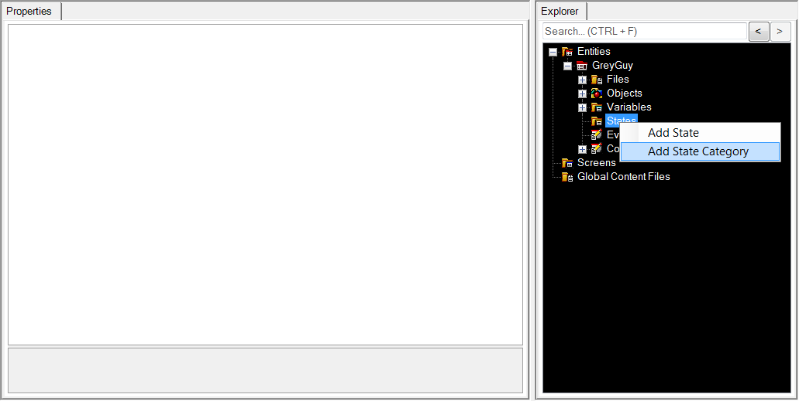
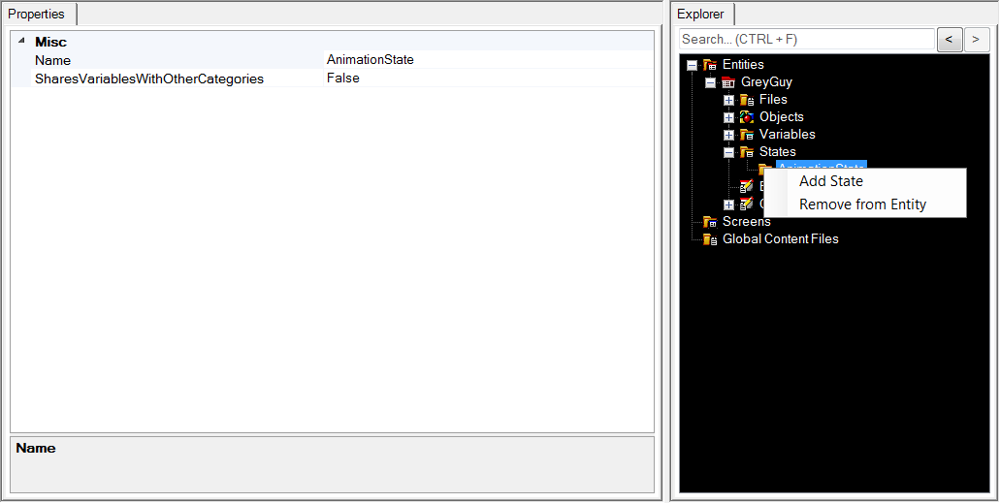
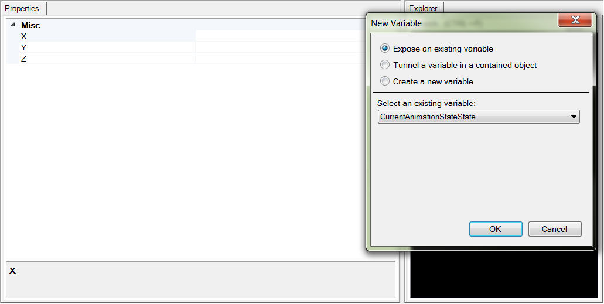
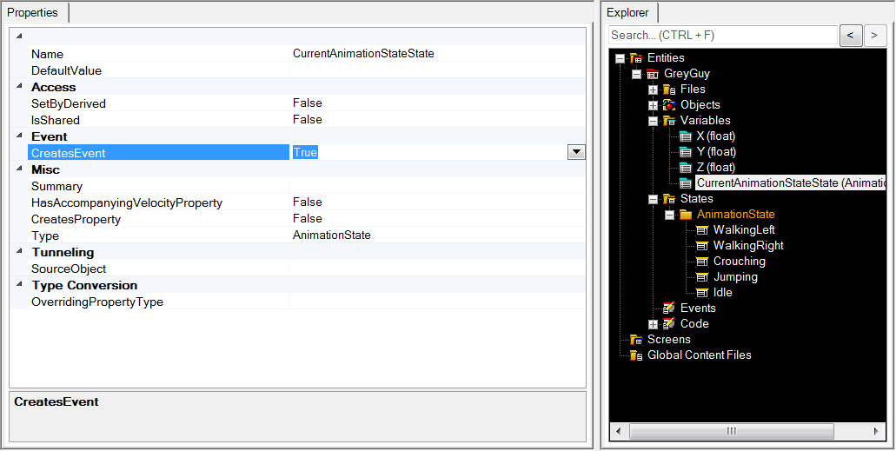
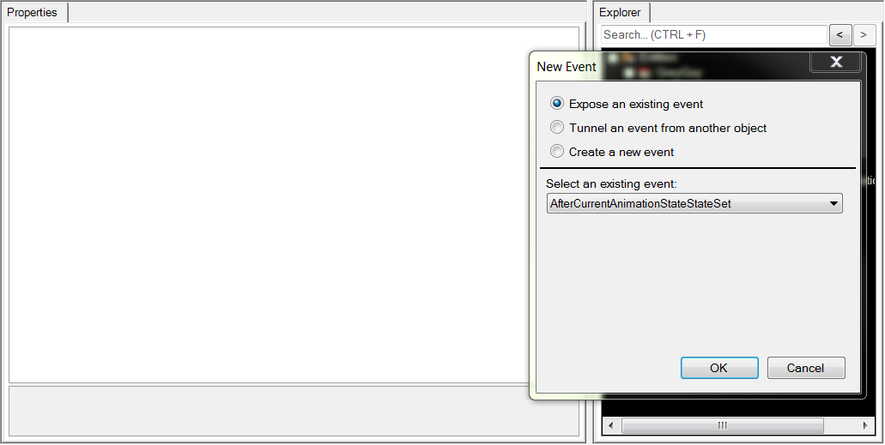
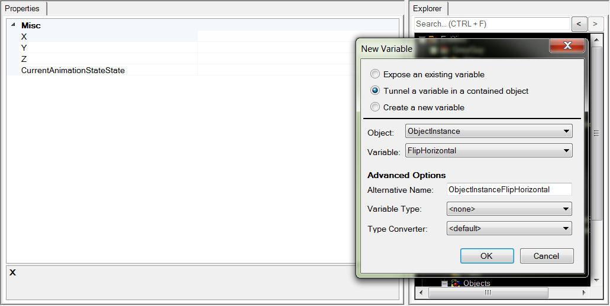
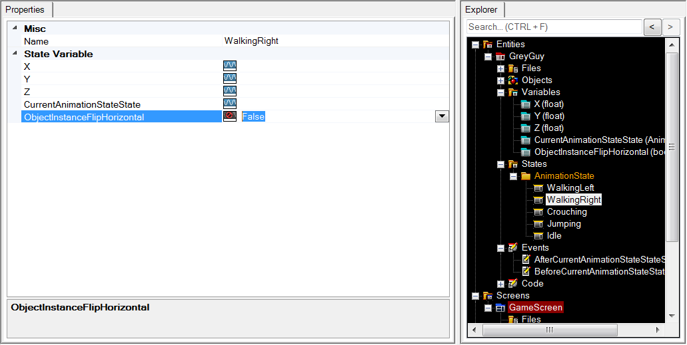

This tutorial builds on the
previous entities tutorial by making use of an advanced Glue topic:
States. In it, you will learn how to apply states to your Glue Entity in order to simplify setting the proper animation for a character.
In the previous tutorial, you learned how to load an existing Spriter animation into a Glue Entity, and with some simple keyboard input code, you played a walk left and right animation, plus idle. In this tutorial, we will expand on the concept by using States in glue. It is my hope that you start to see the true power of using Glue to load Spriter animations.
Since we will be starting at the end of the previous tutorial, please make sure you have an entity with a Spriter animation loaded, and an ObjectInstance object that is a SpriterObject. If you did the previous tutorial, that is where you are, so open that project in Glue at this time.
Adding states
Open your GreyGuy entity, right click on States, and click Add State Category:

Call it AnimationState
Now expand States, right click on the AnimationState folder, and click Add State:

Call it WalkingLeft.
Repeat this process until you have the following States added:
- WalkingLeft
- WalkingRight
- Crouching
- Jumping
- Idle
Add a variable with event for AnimationState
That created an enumeration. Now we need a variable and events for the current AnimationState GreyGuy is in.
Right Click Variables, add Variable, and select to expose an existing variable CurrentAnimationStateState:

Now select the Variable in the list of Variables, and in the property grid, change CreatesEvent to True:

Now expose two events
We have a variable that you can set on GreyGuy, but we need to know when it changes. That is where events come in.
Right click on Events, and Add Event:

Choose to expose an existing event, and select AfterCurrentAnimationStateStateSet:

Repeat this and add an event for BeforeCurrentAnimationStateStateSet as well.
Now we're ready to code!
So, we have everything we need to fire up an animation, set some events, and get this guy running around, jumping, and crouching!
Open up the project in Visual Studio (Project menu in Glue is a quick way to do this.)
Replace the CustomActivity function in your GreyGuy entity with the following code:
{% highlight C# %}if (!InputManager.Keyboard.KeyDown(Keys.Right) && !InputManager.Keyboard.KeyDown(Keys.Left))
{
Velocity.X = 0f;
}
if (InputManager.Keyboard.KeyPushed(Keys.Right))
{
Velocity.X = 250f;
}
if (InputManager.Keyboard.KeyPushed(Keys.Left))
{
Velocity.X = -250f;
}
if (Velocity.X == 0f && !InputManager.Keyboard.KeyDown(Keys.Up) && !InputManager.Keyboard.KeyDown(Keys.Down))
{
CurrentAnimationStateState = AnimationState.Idle;
}
else if (Velocity.X < 0f && ObjectInstance.CurrentAnimation.Name != "walk")
{
CurrentAnimationStateState = AnimationState.WalkingLeft;
}
else if (Velocity.X > 0f && ObjectInstance.CurrentAnimation.Name != "walk")
{
CurrentAnimationStateState = AnimationState.WalkingRight;
}
else if (Velocity.X == 0f && ObjectInstance.CurrentAnimation.Name != "crouch_down" &&
InputManager.Keyboard.KeyDown(Keys.Down))
{
CurrentAnimationStateState = AnimationState.Crouching;
}
else if (ObjectInstance.CurrentAnimation.Name != "jump_start" && ObjectInstance.CurrentAnimation.Name != "jump_loop" && InputManager.Keyboard.KeyDown(Keys.Up))
{
CurrentAnimationStateState = AnimationState.Jumping;
}{% endhighlight %}
Now look for GreyGuy.Event.cs, and make it look like this:
{% highlight C# %}private Action
_jumpstartfinished = null;
private AnimationState _previousAnimationState;
void OnAfterCurrentAnimationStateStateSet(object sender, EventArgs e)
{
var state = CurrentAnimationStateState;
if (_previousAnimationState != CurrentAnimationStateState)
{
switch (state)
{
case AnimationState.Idle:
ObjectInstance.StartAnimation("idle");
break;
case AnimationState.WalkingLeft:
case AnimationState.WalkingRight:
ObjectInstance.StartAnimation("walk");
break;
case AnimationState.Crouching:
ObjectInstance.StartAnimation("crouch_down");
break;
case AnimationState.Jumping:
ObjectInstance.StartAnimation("jump_start");
if (_jumpstartfinished == null)
{
_jumpstartfinished = animation =>
{
ObjectInstance.AnimationFinished -= _jumpstartfinished;
if (CurrentAnimationStateState == AnimationState.Jumping)
{
ObjectInstance.StartAnimation("jump_loop");
}
};
}
ObjectInstance.AnimationFinished += _jumpstartfinished;
break;
}
}
}
void OnBeforeCurrentAnimationStateStateSet(object sender, EventArgs e)
{
_previousAnimationState = CurrentAnimationStateState;
}{% endhighlight %}
You're probably going to have to add a using statement too:
{% highlight C# %}using FlatRedBall_Spriter;{% endhighlight %}
If you fire up the game now, you'll be able to walk around, jump, and crouch!
You will notice that the GreyGuy is moonwalking if you walk left, and we can fix that easily right from within Glue!
Right click on Variables, and add a new variable. Tunnel a variable from ObjectInstance called FlipHorizontal:

Now that you have a variable on GreyGuy for FlipHorizontal, States in Glue can see it, so go to the WalkingLeft state, and make sure it sets ObjectInstanceFlipHorizontal to true:

Do the same for WalkingRight, but set it to false:

Now when you run the game, changing to the WalkingLeft state will cause the FlipHorizontal property (via the Variable tunnel) to change to true, therefore causing the SpriterObject to flip the animation!
That's it! I hope you can see now the power of Glue and Spriter combined! More tutorials to come, so keep checking!